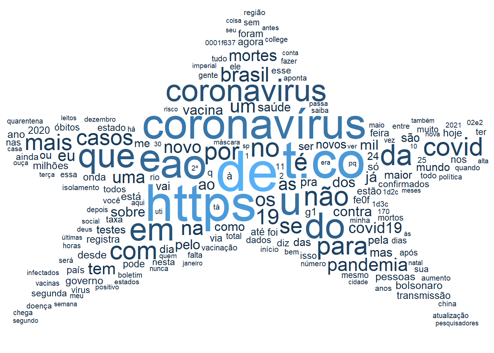
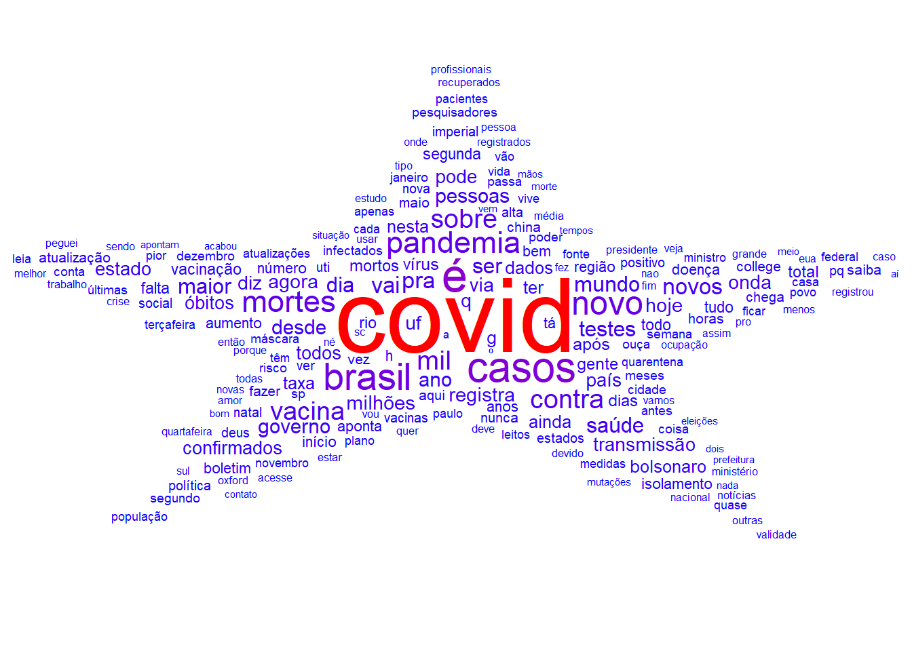
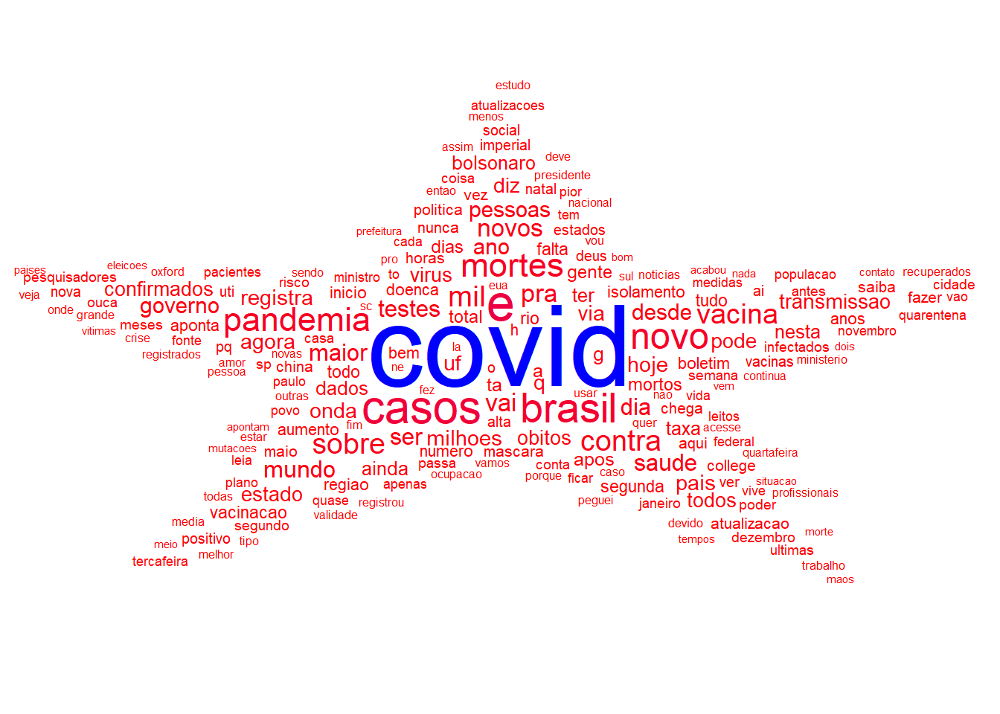
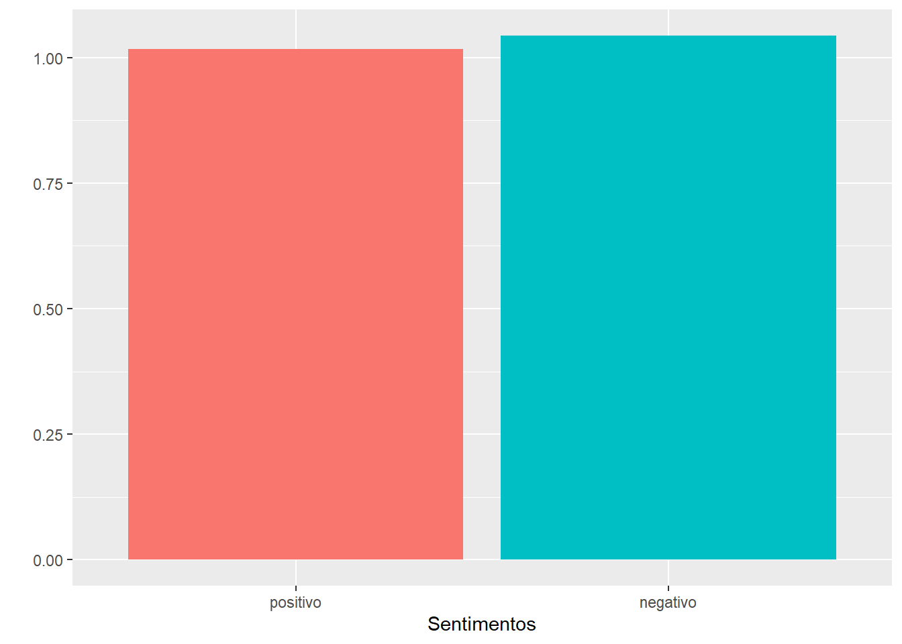
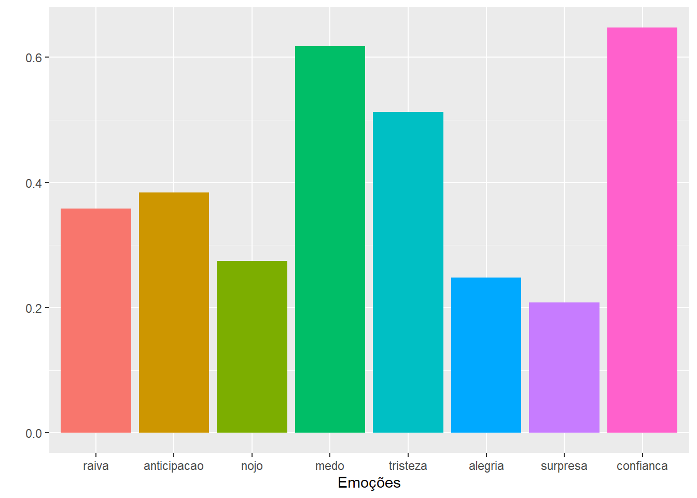

5 Modelagem e Análise de Texto
A mineração de texto é uma área fascinante da ciência de dados que se concentra na extração de informações significativas de dados textuais. Na era digital de hoje, onde enormes volumes de texto são gerados diariamente, a mineração de texto torna-se essencial para analisar e compreender esses dados. Com o uso da linguagem de programação R, essa tarefa não apenas se torna acessível, mas também altamente eficiente (Kwartler 2017; J. Silge and Robinson 2017).
5.1 Conceitos Básicos de Mineração de Texto
A mineração de texto é uma área crucial da ciência de dados, dedicada à análise e extração de informações relevantes de grandes volumes de dados textuais. Com a proliferação de dados digitais, a habilidade de efetivamente analisar textos se torna cada vez mais importante. A linguagem de programação R, conhecida por sua aplicação em estatística e ciência de dados, oferece ferramentas robustas para a mineração de texto (Anandarajan, Hill, and Nolan 2019; Kwartler 2017; J. Silge and Robinson 2017; Kumar and Paul 2016 ).
Antes de explorarmos as ferramentas específicas do R, é essencial entender alguns conceitos fundamentais da mineração de texto (Caseli and Nunes 2023):
Corpus: No contexto da mineração de texto, um “corpus” refere-se a uma coleção de documentos de texto. Estes documentos podem variar em tamanho e forma, desde tweets e comentários online até artigos acadêmicos e livros. Um corpus é o ponto de partida para a maioria das análises de texto, servindo como o conjunto de dados primário sobre o qual os métodos de mineração de texto são aplicados.
-
Tokenização: Este é o processo de dividir o texto em unidades menores, chamadas “tokens”. Tokens podem ser palavras, frases ou até mesmo caracteres individuais. A tokenização é um passo crucial, pois transforma grandes blocos de texto em pedaços menores e mais gerenciáveis, permitindo uma análise mais detalhada e minuciosa. Esses tokens podem ser representados de várias formas:
Caracteres: Onde o texto é dividido em caracteres individuais.
Palavras: Separação do texto em palavras individuais, facilitando a análise de frequência de palavras e outras métricas baseadas em palavras.
N-gramas: Esta forma agrupa sequências de ‘n’ elementos adjacentes. Por exemplo, em um bigrama (um tipo de n-grama onde n=2), palavras são agrupadas em pares, permitindo análise contextual mais detalhada.
Sentenças: O texto é dividido em sentenças completas, útil para análises que requerem compreensão do contexto mais amplo do texto.
Na análise de texto o conceito de “termo” desempenha um papel central. Neste contexto, o termo é uma unidade flexível que pode variar de caracteres individuais a palavras ou sequências de n elementos, dependendo das necessidades específicas da análise (Anandarajan, Hill, and Nolan 2019; Caseli and Nunes 2023).
Na maioria das vezes, um “termo” é usado como sinônimo de palavra. Esta flexibilidade permite que a análise seja adaptada conforme o objetivo do estudo, seja ele focado na frequência de letras, palavras específicas ou padrões de frases (Anandarajan, Hill, and Nolan 2019; Caseli and Nunes 2023)..
A frequência de termos é uma métrica crucial na análise de textos. Ela se refere ao número de vezes que um termo específico aparece em um conjunto de documentos, como um corpus. Esta métrica é fundamental para (Anandarajan, Hill, and Nolan 2019; Kwartler 2017; J. Silge and Robinson 2017; Kumar and Paul 2016 ):
Quantificar a presença ou a importância de termos individuais.
Realizar contagem simples de ocorrências de um termo em relação ao total de documentos.
Identificar termos-chave e padrões de uso em um corpus.
Uma das ferramentas mais úteis na análise de texto é a Matriz Documento-Termos (MDT). Esta representação tabular descreve a frequência de termos em documentos de um corpus (Anandarajan, Hill, and Nolan 2019; Kwartler 2017; J. Silge and Robinson 2017; Kumar and Paul 2016 ):
Cada linha da matriz representa um documento individual.
Cada coluna corresponde a um termo ou palavra.
Os valores na matriz indicam a frequência de ocorrências de um termo em um documento.
A MDT é uma maneira eficaz de visualizar e analisar a relação entre documentos e termos, facilitando a identificação de padrões.
Para uma representação gráfica e intuitiva da análise de texto, as nuvens de palavras são extremamente populares. Elas destacam as palavras mais mencionadas em um texto, usando tamanhos e fontes de letras diferentes para representar a frequência das ocorrências das palavras. Essas nuvens oferecem uma visão rápida e visualmente atraente dos termos mais relevantes em um corpus (Anandarajan, Hill, and Nolan 2019; Kwartler 2017; J. Silge and Robinson 2017; Kumar and Paul 2016 )..
5.1.1 A Importância da Língua na Mineração de Texto
Na mineração de texto, um aspecto crucial que muitas vezes determina a eficácia da análise é o idioma ou a língua do texto. A dependência da língua é significativa, pois diferentes línguas possuem estruturas e características únicas que influenciam a maneira como o texto é processado e analisado (Anandarajan, Hill, and Nolan 2019; Caseli and Nunes 2023)..
A mineração de textos se baseia fortemente nos níveis de organização de uma língua para criar recursos eficazes de processamento de linguagem natural (PLN). Isso inclui (Anandarajan, Hill, and Nolan 2019; Caseli and Nunes 2023).:
Entrada e Saída de Modelos: O idioma do texto influencia diretamente a maneira como os dados são inseridos nos modelos de PLN e como as informações são extraídas. Diferentes idiomas podem exigir abordagens específicas para a tokenização, análise morfológica, sintática e semântica.
Níveis Hierárquicos de Organização da Língua: Cada língua possui uma estrutura hierárquica única, que inclui fonemas, morfemas, palavras, frases e textos. Essa estrutura hierárquica é essencial para transformar a linguagem não estruturada em uma representação matemática adequada para modelagem. Por exemplo, a maneira como as palavras são formadas (morfologia) e organizadas em frases (sintaxe) varia significativamente de uma língua para outra.
Representação Matemática: A representação matemática de textos é um passo fundamental na mineração de texto, permitindo que os modelos de PLN quantifiquem e analisem os dados de texto. A eficácia dessa representação depende de uma compreensão profunda dos níveis hierárquicos do idioma em questão.
Portanto, a consideração cuidadosa da língua é indispensável em qualquer processo de mineração de texto. Entender as nuances e características específicas de um idioma permite uma análise mais precisa e eficiente dos dados textuais.
5.2 Introdução à Mineração de Texto com R
Para ilustrar a aplicação da mineração de texto, utilizaremos dados coletados do Twitter no período de 23 a 26 de novembro de 2020, usando a palavra-chave “Coronavirus”. Nesta coleta, foram obtidos mais de 100 mil tweets, mas para nossa análise, utilizaremos uma amostra de 2000. Além do texto dos tweets, estão disponíveis mais de 90 informações adicionais, como nome do usuário, data, horário, entre outras. Faça o download do arquivo aqui tweets.csv
Para começar a análise dos dados do Twitter, primeiro precisamos instalar e carregar alguns pacotes essenciais no R. Estes pacotes nos ajudarão a manipular, processar e visualizar os dados de texto:
tidyverse: Uma coleção de pacotes para ciência de dados que torna mais fácil a manipulação e visualização de dados.tidytext: Especificamente focado na mineração de texto, facilita a conversão de texto em um formato estruturado para análise.tm(Text Mining): Um framework abrangente para mineração de texto e análise de dados textuais.wordcloud: Permite a criação de nuvens de palavras, que são úteis para visualizar a frequência de palavras.ggwordcloud: Uma extensão doggplot2para a criação de nuvens de palavras esteticamente agradáveis e informativas.
5.2.1 Preparando os Dados
Após configurar o ambiente com os pacotes necessários, o próximo passo é preparar os dados para análise. Isso envolve os seguintes passos:
Download do Arquivo: Primeiro, fazemos o download do conjunto de dados
tweets.csvque contém os dados coletados do Twitter.Importar o Arquivo CSV: Em seguida, importamos o arquivo CSV para o R. Usamos a função
read.csv()para carregar os dados no R e visualizamos as primeiras linhas do conjunto de dados comhead(rt)[6:7]para verificar a estrutura e o conteúdo dos dados.Selecionar os Tweets: Finalmente, extraímos especificamente a coluna de texto dos tweets do conjunto de dados para análise. Armazenamos apenas os textos dos tweets em uma variável chamada
tweets.
text
1 O desafio de levar a vacina do coronavírus as regiões remotas e impenetráveis... https://t.co/pZlpObzBcv
2 Pode colar tranquilo, pois estamos adotando as principais medidas para evitar a proliferação do novo coronavírus: distanciamento de 1,5m entre as mesas, cardápido por QR code, pagamento sem contato, álcool gel e medição de temperatura de todos os clientes na entrada.<U+2063><U+2063><U+2063> <U+0001F637>
3 Minha vizinha morreu semana passada de covid-19 e o marido está internado. O Hospital Municipal da Lapa está lotado de pacientes com coronavírus ao lado de idosos e crianças. https://t.co/7UyKj9FS9m
4 Estado atualiza dados sobre o coronavírus em SC - Notícias - Tudo Sobre Xanxerê https://t.co/fss46lULkJ
5 Governo atualiza os dados sobre o coronavírus em SC - Notícias - Tudo Sobre Xanxerê https://t.co/S1dTqfQIev
6 Pelas imagens apresentadas pela TV, c/festas e aglomerações no Rio e em S. Paulo, os jovens trocaram a senha "vou pegar uma onda", qd iam para o mar, por "vou desafiar a 2ª onda". E as contaminações por coronavírus entre 18 a 29 anos continuam crescendo. https://t.co/5XdMx2bc98
source
1 Jornal ADVFN Brasil
2 TweetDeck
3 Twitter Web App
4 Twitter Web App
5 Twitter Web App
6 Twitter Web App#Obter apenas o tweets
tweets=(rt$text)Após a preparação inicial dos dados, o próximo passo na análise de texto é a criação de um corpus. Um corpus é uma coleção de documentos textuais que serve como base para a análise.
Criar o Corpus: Usamos a função
VCorpusdo pacotetmpara criar o corpus.VCorpusé usado para criar um corpus volátil, que é armazenado na memória (em oposição a um corpus persistente, que é armazenado em disco).Fonte de Dados: O argumento
VectorSourceé utilizado para indicar a fonte dos dados. No caso, usamosx = tweets, ondetweetsé a variável contendo os textos extraídos dos tweets.Configuração de Idioma: No
readerControl, definimos o idioma do corpus como português do Brasil ("pt-BR"). Isso é importante para garantir que as operações subsequentes de processamento de texto levem em consideração as particularidades do idioma.Visualização do Corpus: Ao executar
cps1, obtemos uma visualização do corpus criado, que nos dá uma ideia da estrutura e do conteúdo do mesmo.
##Corpus com idioma portugues
cps1=VCorpus(VectorSource(x = tweets),
readerControl = list(language = "pt-BR"))
cps1<<VCorpus>>
Metadata: corpus specific: 0, document level (indexed): 0
Content: documents: 20005.2.2 Pré-processamento de Termos no Corpus
O pré-processamento é uma etapa essencial na mineração de texto. Ele envolve a limpeza e a normalização dos dados para tornar a análise subsequente mais eficaz. No contexto dos tweets coletados, realizaremos várias operações de pré-processamento usando o pacote tm em R:
Padronização de Caixa: Converter todo o texto para letras minúsculas para uniformidade.
Remoção de URLs: Eliminar links da internet, que não são relevantes para a análise de texto.
Remoção de Menções e Hashtags: Limpar menções a usuários e hashtags para focar no conteúdo textual.
Remoção de Pontuação: Excluir pontuações que não contribuem para a análise de significado.
Substituição de Palavras-Chave: Unificar variações da palavra “coronavírus” para um termo comum (‘covid’).
Remoção de Palavras de Parada: Excluir palavras comuns em português que não agregam valor significativo à análise.
Remoção de Repetições e Números: Limpar repetições de ‘k’ e números para focar no conteúdo textual.
Remoção de Espaços em Branco: Eliminar espaços extras para manter a consistência do texto.
Este processo de pré-processamento assegura que o corpus esteja limpo e normalizado, facilitando as análises futuras, como a identificação de temas recorrentes, a análise de sentimentos ou a modelagem de tópicos.
# Definindo padrões de palavras-chave
padroes <- c("coronav[iíî]rus", "covid-19", "covid19")
padroes <- paste(padroes, collapse = "|")
# Pré-processamento do Corpus
cps2 = cps1 %>%
tm_map(FUN = content_transformer(tolower)) %>% # Padronização de caixa
tm_map(FUN = content_transformer(
function(x) gsub("https?://\\S+", "", x))) %>% # Remoção de URLs
tm_map(FUN = content_transformer(
function(x) gsub("@\\S+", "", x))) %>% # Remoção de menções
tm_map(FUN = content_transformer(
function(x) gsub('#\\S+', '', x))) %>% # Remoção de hashtags
tm_map(FUN = content_transformer(removePunctuation)) %>% # Remoção de pontuação
tm_map(FUN = content_transformer(
function(x) gsub(padroes, 'covid', x))) %>% # Substituição de variações de 'coronavírus' por 'covid'
tm_map(FUN = content_transformer(removeWords),
stopwords("portuguese")) %>% # Remoção de palavras de parada
tm_map(FUN = content_transformer(
function(x) gsub("k{1,}", "", x))) %>% # Remoção de repetições de 'k'
tm_map(FUN = content_transformer(removeNumbers)) %>% # Remoção de números
tm_map(FUN = content_transformer(stripWhitespace)) # Remoção de espaços em brancoAlém das etapas anteriores de pré-processamento, uma prática importante é a remoção de acentos. Isso pode ser particularmente útil para padronizar o texto e facilitar análises posteriores. No R, isso pode ser feito através de uma função personalizada:
remover_acentos=function(texto){
texto=iconv(texto, "UTF-8", "ASCII//TRANSLIT") # Remove os acentos
texto=gsub("[^a-zA-Z0-9]", " ", texto) # Substitui caracteres especiais por espaços
texto=gsub("\\s+", " ", texto) # Remove espaços consecutivos
texto=trimws(texto) # Remove espaços no início e no fim do texto
return(texto)
}
cps3=cps2 %>%
tm_map(FUN = content_transformer(remover_acentos))5.2.3 Comparação dos Três Corpus
Para entender o impacto de cada etapa de pré-processamento, você pode comparar os conteúdos dos três corpus (cps1, cps2 e cps3):
cps1[[1]]$content[1] "O desafio de levar a vacina do coronavírus as regiões remotas e impenetráveis... https://t.co/pZlpObzBcv"cps2[[1]]$content[1] " desafio levar vacina covid regiões remotas impenetráveis "cps3[[1]]$content[1] "desafio levar vacina covid regioes remotas impenetraveis"Essa comparação permite visualizar as mudanças no texto após cada etapa de pré-processamento no primeiro tweet, destacando a eficácia das transformações realizadas.
5.2.4 Frequência de Termos
Depois de preparar e pré-processar os dados do Twitter, o próximo passo é analisar a frequência dos termos. Isso envolve converter os corpus em um formato mais estruturado e depois contar quantas vezes cada palavra aparece em cada documento. No R, esse processo pode ser realizado usando as funções do pacote tidytext e a criação de Matriz de Termos Documentos. Vejamos como isso é feito:
#Converter para formato tidy
tt1=tidy(cps1)
tt2=tidy(cps2)
tt3=tidy(cps3)
##Contagem por palavras por documento
dtm1=tt1%>%
unnest_tokens(texto,text,token="words")%>%
group_by(id)%>%
count(texto)%>%
cast_dtm(id, texto, n,weighting=weightTf)
dtm2=tt2%>%
unnest_tokens(texto,text,token="words")%>%
group_by(id)%>%
count(texto)%>%
cast_dtm(id, texto, n,weighting=weightTf)
dtm3=tt3%>%
unnest_tokens(texto,text,token="words")%>%
group_by(id)%>%
count(texto)%>%
cast_dtm(id, texto, n,weighting=weightTf)Este método de análise de frequência de termos permite uma visão quantitativa de quais palavras são mais comuns em diferentes estágios do pré-processamento, ajudando a revelar padrões e temas importantes nos dados do Twitter.
5.2.5 Criação de Nuvens de Palavras com R
Depois de analisar a frequência dos termos nos dados do Twitter, podemos visualizar essas frequências usando nuvens de palavras. Isso nos dá uma representação gráfica intuitiva de quais termos são mais comuns nos tweets. Vamos ver como isso é feito para cada um dos três conjuntos de dados processados::
Cálculo das Frequências: Primeiro, calculamos a frequência de cada termo nos matriz de termos documentos e organizamos os termos em ordem decrescente de frequência.
Seleção dos Top Termos: Escolhemos os termos mais frequentes para incluir na (neste caso, 200)nuvem de palavras.
Criação da Nuvem de Palavras: Usamos
ggplotjunto comgeom_text_wordcloudpara criar as nuvens de palavras.
#Frequenciass
freq1=tidy(dtm1)%>%
count(term,wt=count)%>%
arrange(desc(n))
freq2=tidy(dtm2)%>%
count(term,wt=count) %>%
arrange(desc(n))
freq3=tidy(dtm3)%>%
count(term,wt=count)%>%
arrange(desc(n))
n1=200
p1=freq1 %>%
top_n(n1)%>%
ggplot( aes(label = reorder(term,n), size = n,color = n))+
geom_text_wordcloud(shape = "star")+
scale_size_area(max_size = 20)+
theme_minimal()
p1
p2=freq2 %>%
top_n(n1)%>%
ggplot( aes(label = term, size = n,color=n))+
geom_text_wordcloud(shape = "star")+
scale_size_area(max_size = 20)+
theme_minimal()+
scale_color_gradient(low = "blue", high = "red")
p2
p3=freq3 %>%
top_n(n1)%>%
ggplot( aes(label = term, size = n,color=n))+
geom_text_wordcloud(shape = "star")+
scale_size_area(max_size = 20)+
theme_minimal()+
scale_color_gradient(low = "red", high = "blue")
p3
5.3 Análise de Sentimentos
A análise de sentimentos, também conhecida como mineração de opinião, é uma área interdisciplinar que estuda opiniões, sentimentos, avaliações e emoções expressas em textos. Essa técnica é fundamental para compreender a intenção emocional por trás das palavras, permitindo inferir se um texto é positivo, negativo, ou expressa emoções específicas como surpresa ou tristeza.
5.3.0.1 Aplicações da Análise de Sentimentos
Esta análise é utilizada em uma variedade de aplicações, especialmente na inteligência de negócios. Algumas aplicações comuns incluem:
Análise de Discussões em Redes Sociais: Avaliar o sentimento do público sobre tópicos específicos.
Avaliação de Respostas de Pesquisas: Compreender a reação das pessoas a produtos, serviços ou eventos.
Análise de Avaliações de Produtos: Determinar se as opiniões expressas sobre um produto são predominantemente positivas ou negativas.
5.3.0.2 Como Funciona a Análise de Sentimentos?
A análise de sentimentos computacional busca determinar automaticamente os sentimentos expressos em um texto. Comumente, os sentimentos são classificados de forma binária (positivo x negativo), mas podem também identificar emoções específicas, como medo, alegria ou raiva.
5.3.0.3 Léxico na Análise de Sentimentos
Um método comum para realizar análise de sentimentos é baseado em um léxico, um dicionário de palavras onde cada termo recebe uma pontuação associada a um sentimento específico. As palavras podem ser classificadas como:
Positivas, negativas ou neutras.
Associadas a emoções específicas, como alegria, raiva, tristeza, entre outras.
5.3.0.4 NRC Emotion Lexicon
Um exemplo notável é o NRC Emotion Lexicon, que oferece uma lista extensa de palavras em vários idiomas, incluindo o português, associadas a oito emoções distintas (raiva, medo, antecipação, nojo, tristeza, surpresa, alegria e confiança) e dois sentimentos gerais (positivo e negativo). Mais informações sobre este léxico podem ser encontradas em NRC Emotion Lexicon.
5.3.1 Exemplo Prático
Para ilustrar a utilização arvore de decisão, utilizaremos dados coletados do Twitter no período de 23 a 26 de novembro de 2020, apresentado na seção anterior.
Para exemplificar a utilização da análise de sentimentos em dados do Twitter, vamos prosseguir com o exemplo, utilizando o corpus de tweets pré-processado (sem acentos) e aplicando a análise de sentimentos com o pacote syuzhet. Além disso, usaremos o pacote reshape2 para realizar cálculos sumários.
Para atribuir sentimentos aos dados de texto, seguimos estes passos no R:
Atribuição de Sentimento: Usamos
left_joinpara combinar nossos dados de texto (TF) com um dicionário de sentimentos. Com a funçãoget_sentiment_dictionary('nrc', language = "portuguese")é obtido r um léxico de sentimentos em português. Assim, cada palavra no nosso conjunto de dados é comparada com as palavras no léxico para atribuir um sentimento correspondente.Contagem de Sentimentos por Documento: Após atribuir os sentimentos, agrupamos os dados por documento e contamos quantas vezes cada sentimento aparece. Esse processo nos ajuda a entender a prevalência de diferentes emoções nos documentos.
5.3.2 Preparação dos Dados de Sentimentos para Visualização
Preparar dados de sentimentos para visualização é uma etapa crucial na análise de sentimentos. Essa tarefa envolve reorganizar e resumir os dados para que possam ser visualizados de forma eficaz. Vamos explorar como isso pode ser feito no R:
Pivotamento dos Dados: Usamos
pivot_widerdo pacotetidyrpara transformar os dados, colocando cada tipo de sentimento em sua própria coluna. Isso facilita o cálculo de estatísticas e a visualização dos dados.Cálculo de Escores: Calculamos um ‘escore’ para cada documento, que é a diferença entre a soma dos sentimentos positivos e negativos. Isso fornece uma medida geral da valência do sentimento no texto.
Média de sentimentos: Calculamos a média dos sentimentos positivos e negativos em todos os documentos
Média de emoções: Calculamos também as médias para cada emoção específica
##Colocar cada sentimento em uma coluna
Senti=TF2%>%
pivot_wider(names_from = sentiment, #necessário pacote tidyr
values_from = n,
values_fill = 0)%>%
group_by(id)%>%
mutate(escore=sum(positive)-sum(negative))%>%
ungroup()
##Visu
Senti[1:2]# A tibble: 2,000 × 2
id anger
<dbl> <int>
1 1 2
2 2 1
3 3 0
4 4 0
5 5 0
6 6 1
7 7 1
8 8 1
9 9 0
10 10 0
# ℹ 1,990 more rows#Obter valor médio dos sentimentos
sentiment=Senti %>%
summarise(
positivo = mean(positive),
negativo = mean(negative)) %>%
melt #reshape2
sentiment variable value
1 positivo 1.0170
2 negativo 1.0435#Obter emoções
sentiment1=Senti %>%
summarise(
raiva = mean(anger),
anticipacao = mean(anticipation),
nojo= mean(disgust),
medo = mean(fear),
tristeza = mean(sadness),
alegria= mean(joy),
surpresa = mean(surprise),
confianca= mean(trust))%>%
melt #pacote reshape2
sentiment1 variable value
1 raiva 0.3585
2 anticipacao 0.3840
3 nojo 0.2750
4 medo 0.6175
5 tristeza 0.5125
6 alegria 0.2480
7 surpresa 0.2085
8 confianca 0.64755.3.2.1 Visualização dos Resultados
Após a transformação e cálculo das médias, os dados estão prontos para serem visualizados. Podemos criar gráficos para mostrar a distribuição dos sentimentos e emoções nos textos, oferecendo insights valiosos sobre a natureza emocional do conteúdo analisado.
Primeiro, criamos um histograma para visualizar a distribuição dos escores de sentimentos:
Este gráfico mostra a frequência de diferentes escores de sentimentos nos tweets. Um escore mais alto indica uma prevalência de sentimentos positivos, enquanto um escore mais baixo indica sentimentos negativos. A distribuição desses escores pode revelar o sentimento geral dos tweets.
Em seguida, criamos um gráfico de barras para os sentimentos gerais (positivo e negativo):
##Graficos de sentimentos
ggplot(sentiment, aes(x=variable, y=value,fill=variable)) +
geom_bar(stat="identity")+
guides(fill="none")+
ylab("")+
xlab("Sentimentos")
Este gráfico mostra a média dos sentimentos positivos e negativos. Ele ajuda a entender qual sentimento é mais predominante no conjunto de dados.
Por fim, visualizamos as emoções específicas com outro gráfico de barras:
##Graficos de emoções
ggplot(data=sentiment1, aes(x=variable, y=value,fill=variable)) +
geom_bar(stat="identity")+
guides(fill="none")+
ylab("")+
xlab("Emoções")
Este gráfico apresenta a média de cada emoção específica (como raiva, alegria, surpresa, etc.) nos tweets. Ele fornece uma visão detalhada de quais emoções são mais expressas no conteúdo analisado.
5.3.3 Outras Análises de Texto no R
O R oferece uma variedade de pacotes e métodos para realizar análises de texto avançadas, além da mineração de sentimentos. Aqui estão algumas dessas análises (Anandarajan, Hill, and Nolan 2019; Kwartler 2017; J. Silge and Robinson 2017; Kumar and Paul 2016 ):
5.3.3.1 1. Análise de N-gramas e Redes Textuais
N-gramas: São combinações de n itens (palavras, caracteres) usados para explorar padrões de linguagem e contextos em textos. A análise de n-gramas é útil para entender a estrutura e o uso da linguagem em um corpus. No R, pacotes como
tm(Feinerer and Hornik 2023) etidytext(Julia Silge and Robinson 2016) podem ser usados para gerar e analisar n-gramas.Redes Textuais: Essas redes representam as relações entre palavras ou frases em um texto, visualizando como os termos estão conectados. Isso pode ser feito com pacotes como
igraph(Csardi and Nepusz 2006) eggraph(Pedersen 2022), que permitem a construção e visualização de redes complexas de palavras ou frases.
5.3.3.2 2. Modelos de Classificação de Texto
- Modelos de classificação de texto são utilizados para categorizar textos em diferentes grupos ou classes. Essa análise é fundamental em aplicações como filtragem de spam e categorização de conteúdo. Pacotes como
caret(Kuhn and Max 2008),e1071(Meyer et al. 2023) oferecem ferramentas para treinar e aplicar modelos de classificação, como máquinas de vetores de suporte (SVM) e modelos bayesianos.
5.3.3.3 3. Agrupamento ou Clusterização de Texto
- O agrupamento de texto envolve a organização de textos em grupos baseados em sua similaridade. É uma forma de análise não supervisionada que pode revelar padrões e temas ocultos em grandes conjuntos de dados. Pacotes como
cluster(Maechler et al. 2022)efactoextra(Kassambara and Mundt 2020) fornecem métodos para realizar clusterização, como K-means e análise hierárquica.
5.3.3.4 4. Modelagem de Tópicos
- A modelagem de tópicos é uma técnica que identifica tópicos ou temas em um conjunto de documentos. É amplamente utilizada para descobrir estruturas latentes em coleções de texto. O pacote
topicmodels(Grün and Hornik 2023)é um dos mais populares no R para esta finalidade, oferecendo implementações de algoritmos como Latent Dirichlet Allocation (LDA).
5.4 Tendências e Avanços na Análise de Texto
As tendências e avanços na análise de texto estão constantemente evoluindo, com novas técnicas e metodologias emergindo regularmente. Vamos explorar essas tendências:
word2vec: Esta técnica revolucionária, desenvolvida por pesquisadores do Google, transforma palavras em vetores numéricos, capturando seu contexto e relações semânticas. O word2vec é amplamente utilizado para tarefas como agrupamento de palavras semelhantes e analogias de palavras. No R, pacotes como
text2vec(Selivanov, Bickel, and Wang 2023) eword2vec(Wijffels and Watanabe 2023) facilitam a aplicação do word2vec.doc2vec: Uma extensão do word2vec, o doc2vec é capaz de representar documentos inteiros, não apenas palavras isoladas, em espaços vetoriais. Essa técnica é útil para compreender a semântica em um nível de documento e para tarefas como a comparação de documentos. No R esta técnica pode ser aplicada pelo pacote
doc2vec(Wijffels 2021)BERT e Transformadores: O BERT (Bidirectional Encoder Representations from Transformers) e modelos baseados em transformadores têm revolucionado o campo do processamento de linguagem natural (PLN). Esses modelos capturam contextos complexos e nuances linguísticas, sendo altamente eficientes em tarefas como compreensão de texto e tradução automática.
Aprendizado Profundo em PLN: O uso de redes neurais profundas em PLN abriu caminho para avanços significativos em análise de sentimentos, geração de texto, e muito mais.
Análise de Texto Multilíngue: Com a globalização, cresce a necessidade de ferramentas capazes de analisar textos em múltiplos idiomas. Isso inclui não apenas a tradução, mas também a compreensão e análise de nuances culturais e linguísticas.
Detecção Automática de Fake News: A identificação de informações falsas ou enganosas é uma área emergente, com a aplicação de técnicas de PLN para detectar e sinalizar conteúdos potencialmente falsos.
Visualização de Dados de Texto: Avanços em visualização, como nuvens de palavras interativas e mapeamento de tópicos, estão ajudando a tornar a análise de grandes conjuntos de dados textuais mais acessível e compreensível.